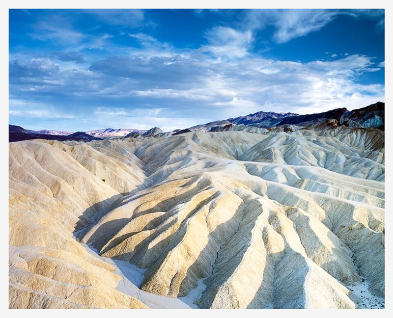

36 EXP. / 필름 / Fujifilm Provia 100F
Fujifilm Provia 100F
중립적이고 정확한 색의 슬라이드 필름. Velvia보다 차분하고 자연스러운 색을 원할 때 고릅니다.

한눈에 보기
- 감도
- ISO 100
- 종류
- 슬라이드(리버설) · E-6 현상
- 판형
- 135 · 120 · 시트
- 이럴 때
- 풍경, 여행, 라이트박스 감상
- 가격
특징
- 중립적이고 정확한 색 재현
- 입자가 매우 고움
- 관용도가 좁은 슬라이드 필름
찍을 때 팁
슬라이드는 관용도가 좁습니다. 밝은 부분에 노출을 맞추고, 중요한 장면은 반 스톱씩 나눠 여러 장.
이 필름에 대해
Velvia가 과장된 색으로 풍경을 극적으로 만든다면, Provia는 본 그대로에 가까운 색을 남깁니다. 예시 사진은 4×5 대형 카메라와 Provia 100F로 찍은 데스밸리 자브리스키 포인트입니다. 확인된 판매가가 없어 가격은 표시하지 않았습니다.
현상
슬라이드 현상. 35mm 한 롤 현상+스캔은 대략 1만~1만 7천 원으로 C-41보다 비쌉니다. 맡기기 전에 E-6 가능 여부를 꼭 문의하세요.